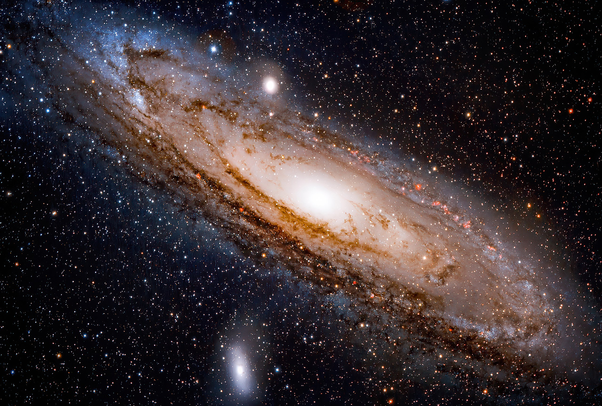

Andromeda–Milky Way collision
The Andromeda–Milky Way collision is a galactic collision predicted to occur in about 4.5 billion years between the two largest galaxies in the Local Group—the Milky Way (which contains the Solar System and Earth) and the Andromeda Galaxy. The stars involved are sufficiently far apart that it is improbable that any of them will individually collide. Some stars will be ejected from the resulting galaxy, often nicknamed Milkomeda or Milkdromeda, a portmanteau of the respective galaxy names.
Contents
Certainty
The Andromeda Galaxy is approaching the Milky Way at about 110 kilometres per second (68 mi/s) as indicated by blueshift. However, the lateral speed (measured as proper motion) is very difficult to measure with sufficient precision to draw reasonable conclusions. Until 2012, it was not known whether the possible collision was definitely going to happen or not.Researchers then used the Hubble Space Telescope to measure the positions of stars in Andromeda in 2002 and 2010, relative to hundreds of distant background galaxies. By averaging over thousands of stars, they were able to obtain the average proper motion with sub-pixel accuracy. The conclusion was that Andromeda is moving southeast in the sky at less than 0.1 milliarc-seconds per year, corresponding to a speed relative to the sun of less than 200 km/s towards the south and towards the east. Taking also into account the sun's motion, Andromeda's tangential or sideways velocity with respect to the Milky Way was found to be much smaller than the speed of approach (consistent with zero given the uncertainty) and therefore it will eventually merge with the Milky Way in around 5 billion years.
Such collisions are relatively common, considering galaxies' long lifespans. Andromeda, for example, is believed to have collided with at least one other galaxy in the past, and several dwarf galaxies such as Sgr dSph are currently colliding with the Milky Way and being merged into it.
The studies also suggest that M33, the Triangulum Galaxy—the third-largest and third-brightest galaxy of the Local Group—will participate in the collision event, too. Its most likely fate is to end up orbiting the merger remnant of the Milky Way and Andromeda galaxies and finally to merge with it in an even more distant future. However, a collision with the Milky Way, before it collides with the Andromeda Galaxy, or an ejection from the Local Group cannot be ruled out.
Stellar collisions
While the Andromeda Galaxy contains about 1 trillion stars and the Milky Way contains about 300 billion, the chance of even two stars colliding is negligible because of the huge distances between the stars. For example, the nearest star to the Sun is Proxima Centauri, about 4.2 light-years or 30 million solar diameters away.
To visualize that scale, if the Sun were a ping-pong ball, Proxima Centauri would be a pea about 1,100 km away, and the Milky Way would be about 30 million km wide. Although stars are more common near the centers of each galaxy, the average distance between stars is still 160 billion km. That is analogous to one ping-pong ball every 3.2 km. Thus, it is extremely unlikely that any two stars from the merging galaxies would collide.
Black hole collisions
The Milky Way and Andromeda galaxies each contain a central supermassive black hole (SMBH), these being Sagittarius A and an object within the P2 concentration of Andromeda's nucleus. These black holes will converge near the centre of the newly formed galaxy over a period that may take millions of years, due to a process known as dynamical friction: as the SMBHs move relative to the surrounding cloud of much less massive stars, gravitational interactions lead to a net transfer of orbital energy from the SMBHs to the stars, causing the stars to be "slingshotted" into higher-radius orbits, and the SMBHs to "sink" toward the galactic core. When the SMBHs come within one light-year of one another, they will begin to strongly emit gravitational waves that will radiate further orbital energy until they merge completely. Gas taken up by the combined black hole could create a luminous quasar or an active galactic nucleus, releasing as much energy as 100 million supernova explosions. As of 2006, simulations indicated that the Sun might be brought near the centre of the combined galaxy, potentially coming near one of the black holes before being ejected entirely out of the galaxy. Alternatively, the Sun might approach one of the black holes a bit closer and be torn apart by its gravity. Parts of the former Sun would be pulled into the black hole.
Fate of the Solar System
Two scientists with the Harvard–Smithsonian Center for Astrophysics stated that when, and even whether, the two galaxies collide will depend on Andromeda's transverse velocity. Based on current calculations they predict a 50% chance that in a merged galaxy, the Solar System will be swept out three times farther from the galactic core than its current distance. They also predict a 12% chance that the Solar System will be ejected from the new galaxy sometime during the collision. Such an event would have no adverse effect on the system and the chances of any sort of disturbance to the Sun or planets themselves may be remote.
Excluding planetary engineering, by the time the two galaxies collide, the surface of the Earth will have already become far too hot for liquid water to exist, ending all terrestrial life; that is currently estimated to occur in about 1 to 1.5 billion years due to gradually increasing luminosity of the Sun (it will have risen by 35–40% above its current luminosity).
Possible triggered stellar events
When two spiral galaxies collide, the hydrogen present on their disks is compressed, producing strong star formation as can be seen on interacting systems like the Antennae Galaxies. In the case of the Andromeda–Milky Way collision, it is believed that there will be little gas remaining in the disks of both galaxies, so the mentioned starburst will be relatively weak, though it still may be enough to form a quasar.
Merger remnant
The galaxy product of the collision has been nicknamed Milkomeda or Milkdromeda.According to simulations, this object is likely to be a giant elliptical galaxy, but with a centre showing less stellar density than current elliptical galaxies. It is, however, possible the resulting object will be a large lenticular or super spiral galaxy, depending on the amount of remaining gas in the Milky Way and Andromeda.
Over the course of the next 150 billion years, the remaining galaxies of the Local Group will coalesce into this object, effectively completing its evolution.